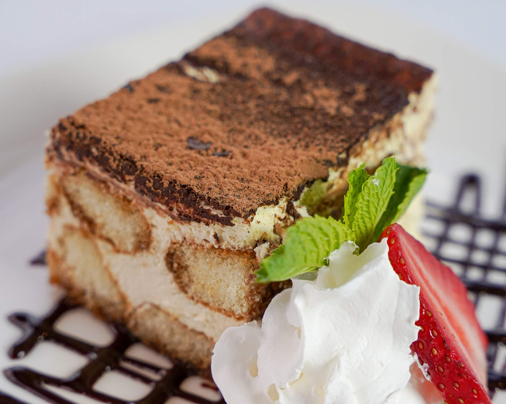
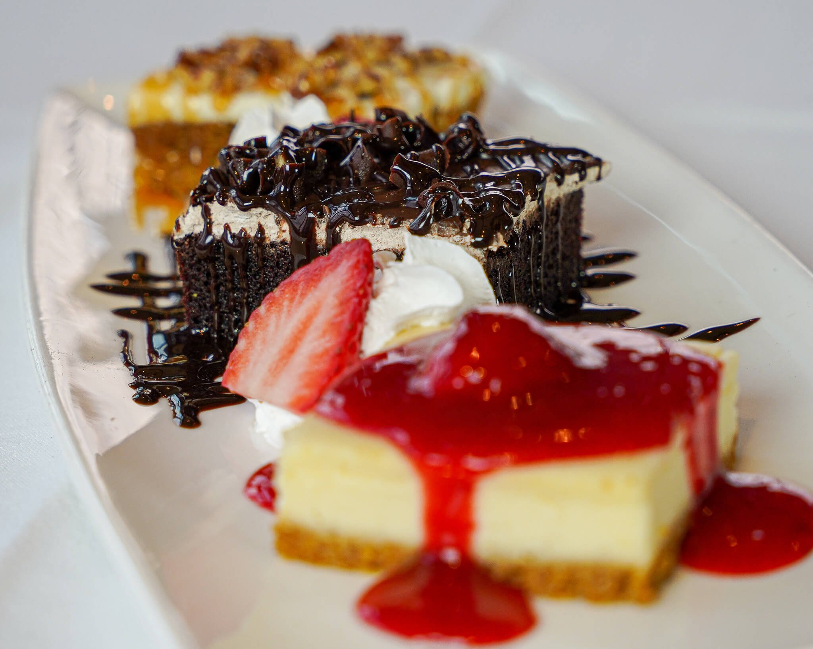
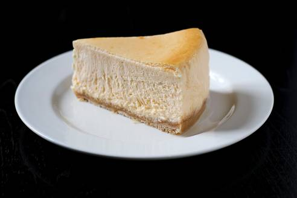
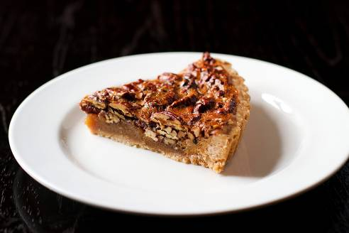
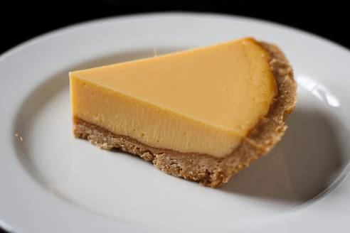

Peter Luger's Menu
Tiramisú
Indulge in a classic dessert, reimagined! A delectable mix of espresso-drenched lady fingers and luscious tiramisu cream, finished with a dusting of rich cocoa powder and delicate marble shavings.
Dessert Trio
Delightful trifecta of Brasão Dessert Trio- Strawberry Cheesecake, Chocolate Mousse Cake, and Carrot Cake. A true taste of Brazil, one bite at a time!
American Cake
-

Cheese Cake
-

Chocolate Mousse
-

Peacan Pie
-

Key Lime Pie